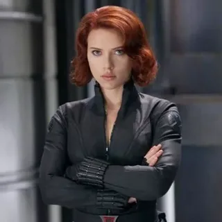

Наталья Романова (англ. Natalia Romanoff), также известная как Чёрная вдова (англ. Black Widow) — одна из лучших шпионов и профессиональных убийц в мире. Первоначально работала на советскую службу разведки, КГБ, но позже стала агентом Щ.И.Т.'а. Во время вторжения читаури присоединилась к Мстителям и помогла защитить Нью-Йорк. После победы над Локи она продолжила работать на Щ.И.Т. и стала напарником Капитана Америки
Первое правило, когда подаешься в бега — не беги, а иди.